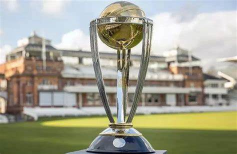
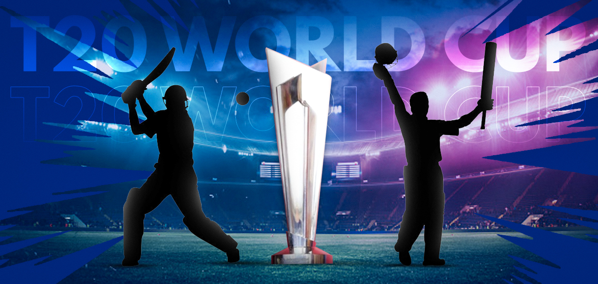

PLAYING FOR



Cricket is a bat-and-ball game played between two teams of eleven players on a field at the centre of which is a 22-yard (20-metre) pitch with a wicket at each end, each comprising two bails balanced on three stumps. The batting side scores runs by striking the ball bowled at one of the wickets with the bat and then running between the wickets, while the bowling and fielding side tries to prevent this (by preventing the ball from leaving the field, and getting the ball to either wicket) and dismiss each batter (so they are "out"). Means of dismissal include being bowled, when the ball hits the stumps and dislodges the bails, and by the fielding side either catching the ball after it is hit by the bat, but before it hits the ground, or hitting a wicket with the ball before a batter can cross the crease in front of the wicket. When ten batters have been dismissed, the innings ends and the teams swap roles. The game is adjudicated by two umpires, aided by a third umpire and match referee in international matches. They communicate with two off-field scorers who record the match's statistical information. Forms of cricket range from Twenty20 (also known as T20), with each team batting for a single innings of 20 overs (each "over" being a set of 6 fair opportunities for the batting team to score) and the game generally lasting three to four hours, to Test matches played over five days. Traditionally cricketers play in all-white kit, but in limited overs cricket they wear club or team colours. In addition to the basic kit, some players wear protective gear to prevent injury caused by the ball, which is a hard, solid spheroid made of compressed leather with a slightly raised sewn seam enclosing a cork core layered with tightly wound string. The earliest reference to cricket is in South East England in the mid-16th century. It spread globally with the expansion of the British Empire, with the first international matches in the second half of the 19th century. The game's governing body is the International Cricket Council (ICC), which has over 100 members, twelve of which are full members who play Test matches. The game's rules, the Laws of Cricket, are maintained by Marylebone Cricket Club (MCC) in London. The sport is followed primarily in South Asia, Australia, New Zealand, the United Kingdom, Southern Africa and the West Indies.[1] Women's cricket, which is organised and played separately, has also achieved international standard. The most successful side playing international cricket is Australia, which has won seven One Day International trophies, including five World Cups, more than any other country and has been the top-rated Test side more than any other country.[citation needed]